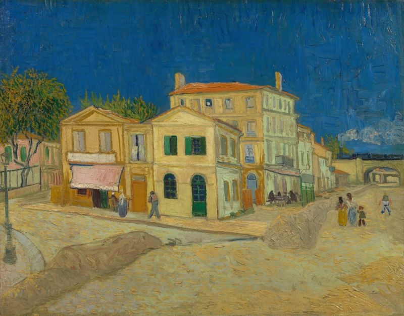

This page contains some of his most famous paintings, some of them are my personal favorites. Feel free to click on the image to learn more!

The Starry Night

Almond Blossom

Self-Portrait with Grey Felt Hat

Self-Portrait as a Painter

Sunflowers

The Bedroom

The Yellow House (The Street)

Wheatfield with Crows